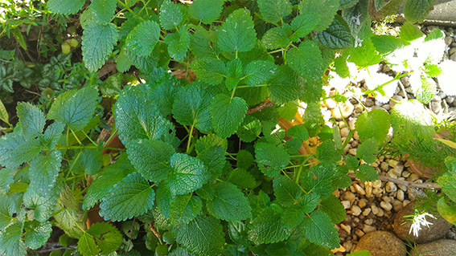

A erva-cidreira (Melissa officinalis), é uma planta pereneherbácea da família da menta e da hortelã e do boldo (Lamiaceae), nativa da Europa meridional. É também designada de melissa.
As folhas são maiores e mais claras que as da hortelã, ovadas a romboidais ou oblongas e com a margem crenada.
Floresce no final do Verão. As flores são de pequenas dimensões, de cor esbranquiçada ou róseas e atraem especialmente as abelhas, como se indica já no nome do seu género botânico (Melissa provém do grego e significa "abelha").
Nas regiões temperadas, os caules secam durante o Inverno, voltando a reverdecer na primavera. Os frutos
são aquénios oblongos, de cor parda e lisos.
É uma planta muito utilizada na medicina tradicional, como erva aromática e em aromaterapia. É utilizada como antiespasmódica, antinevrálgica e como calmante. Acredita-se que ajude a conciliar o sono.
A temperatura ideal para o cultivo da melissa situa-se entre 15°C e 20°C, mas pode ser cultivada com temperaturas oscilando entre 4°C e 25°C. A planta é sensível a temperaturas muito baixas e a geadas.
Esta planta atinge geralmente 70 cm a 1 m de altura, podendo chegar a 1,5 m. e pode ser cultivada em sombra parcial ou com luz solar direta.
O melhor é que o solo seja bem drenado, leve, fértil e rico em matéria orgânica. Contudo, pode ser cultivada em solos mais pobres. Quanto ao pH do solo, a planta é bem tolerante, podendo ser cultivada em solos com pH entre 4,5 e 7,6.
Irrigue com frequência para que o solo seja mantido sempre úmido. A planta adulta é, no entanto, resistente a curtos períodos de seca.
A melissa ou erva-cidreira pode ser cultivada a partir de sementes, divisão de touceiras ou por estaquia.
A germinação das sementes geralmente ocorre em uma a duas semanas, mas pode ser demorada, levando até um ano.
As sementes são pequenas e não devem ser enterradas a mais do que 6 mm de profundidade. O ideal é peneirar uma leve camada de terra sobre as sementes ou simplesmente deixá-las na superfície do solo.
O transplante para o local definitivo é feito quando as mudas estão com cerca de 10 cm de altura.
Muito conhecida como erva medicinal, também é utilizada para dar sabor e aromatizar vários alimentos e bebidas, além de ser muito apreciada como chá.
O seu sabor e aroma característicos, frutado, de limão, principalmente nas folhas, deriva do seu óleo essencial do grupo dos terpenos. O seu óleo também é utilizado em perfumes e produtos de higiene e beleza.
Os apicultores esfregam suas folhas em caixas de colmeias para atrair enxames de abelhas, pois seu óleo essencial mimetiza razoavelmente bem o feromônio de atração liberado pelas abelhas quando estas encontram um local para a nova colmeia. Também há cultivares que são estimados como plantas ornamentais em jardins.